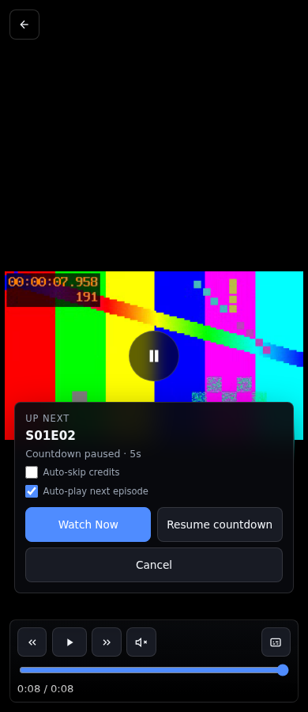
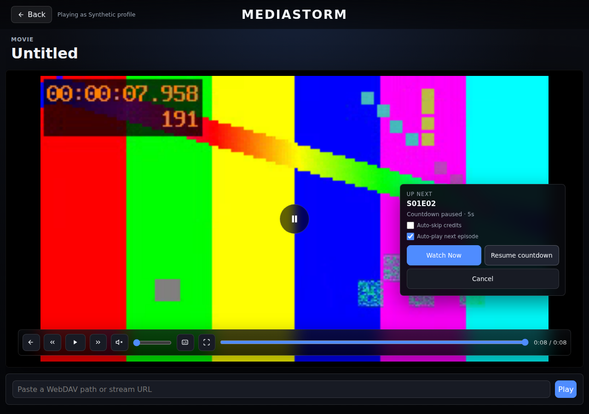

MediaStorm · isolated synthetic validation
Continue to the next episode, on your terms.
Profile autoplay is independent of credits skipping. The next episode counts down for five seconds after genuine media end, or seven seconds at a known credits marker when both choices allow it.
8,160 Go cases and 776 native tests passed. Both APKs built; private debug defaults are empty. Profile persistence, ownership/PIN boundaries and stale settings saves were checked through the real application API.
- Chromium decoded generated video, reached its real end and exercised the production countdown and actual next-source error/retry flow.
- Pause holds the countdown. Cancel and seeking invalidate automatic transitions, including late end events and queued callbacks.
- Autoplay off leaves manual Next Episode available. A missing source retries the same episode and does not silently skip it.
- The controls fit 320, 375, 390, 414, 768 and 1280 pixel browser widths. Guests do not independently advance watch-party playback.
These are web player screenshots. Native Compose screens compiled and their policy/editor state was tested. Physical device rendering, remote focus, audio and accessibility acceptance remain pending. Post-play ratings and recommendations are the next separate package.

Actual production template, generated video, paused countdown.
Desktop player. Open full screenshot.Complete backend results · Race checks · Native tests and APK hashes · Rendered player checks · Real application API checks · Full application playback